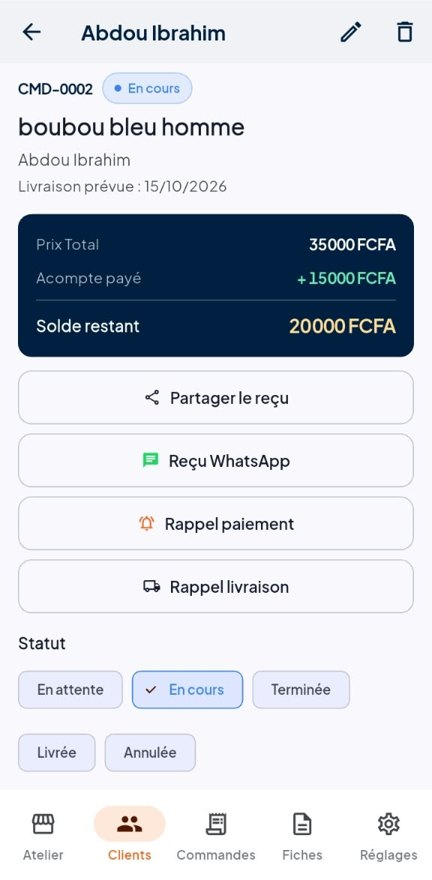

Nous aidons les entreprises et les professionnels à développer leur visibilité, présenter leurs services et mieux communiquer avec leurs clients grâce à des solutions numériques adaptées.
Choisissez un service ou présentez-nous votre besoin pour définir un périmètre adapté.
Pour votre besoin : présenter votre activité, vos services et vos informations de manière claire en ligne.
Bénéfice attendu : donner à vos clients un point d'entrée fiable, moderne et accessible sur téléphone et ordinateur.
Présenter mon projet →Pour votre besoin : rendre votre activité plus facile à trouver lorsqu'une personne recherche un service local.
Bénéfice attendu : gagner en visibilité locale, améliorer la crédibilité et favoriser les demandes de contact.
Demander un devis →Pour votre besoin : centraliser les demandes clients, les commandes et les prises de contact dans un canal professionnel.
Bénéfice attendu : simplifier la communication, organiser les échanges et accélérer la conversion.
Discuter sur WhatsApp →Pour votre besoin : répondre à un besoin spécifique lié à votre activité, vos outils ou vos processus de vente.
Bénéfice attendu : mettre en place une solution adaptée à votre réalité et à votre manière de travailler.
Présenter mon projet →Pour votre besoin : utiliser plus sereinement les outils numériques mis en place pour votre activité.
Bénéfice attendu : gagner en autonomie, mieux gérer votre communication et faire évoluer votre présence digitale.
Demander un devis →Les montants ci-dessous sont des prix de départ proposés. Ils restent modifiables selon le périmètre du projet, les contenus à fournir, les fonctionnalités demandées et les options à intégrer.
Nous échangeons sur votre activité, vos besoins et les objectifs à atteindre.
Vous recevez une proposition claire et un périmètre à valider avant le démarrage.
Le site, les éléments de visibilité et les outils nécessaires sont mis en place selon votre besoin.
Le projet est livré, expliqué et accompagné selon le niveau d'autonomie souhaité.
Le périmètre, les contenus, les options et les frais externes sont précisés avant validation.
Les projets présentés ci-dessous permettent de mieux comprendre les usages possibles. Les démonstrations sont présentées comme des concepts de démonstration et ne remplacent pas des références clients vérifiées.

Application mobile de gestion d'atelier destinée aux artisans. Elle permet de gérer les clients, les commandes, les paiements, les reçus et le suivi des activités de l'atelier depuis un téléphone.
Application Android — APK disponible sur demande Visiter le site AtelierPro →Mini-site pour une boutique avec produits, WhatsApp et carte Google Maps ; exemple de structure et de parcours utilisateur.
Adaptable à votre activité →Site pour un restaurant : menu, horaires, localisation et commande via WhatsApp, pensés comme modèle de présentation.
Adaptable à votre activité →Exemple de site pour un centre de formation avec programmes, infos pratiques et prise de contact simplifiée.
Adaptable à votre activité →Le point de départ est un échange simple sur votre activité, les informations à présenter et les objectifs recherchés.
Les montants proposés sont des points de départ. Le périmètre exact et les fonctionnalités sont confirmés avant validation.
Oui, selon le projet. Les textes, photos et éléments de présentation sont utiles pour préparer le travail.
Oui, selon le projet. L'accompagnement peut se faire à distance et, selon les cas, avec un rendez-vous local.
Je suis Mouslim Yacouba, développeur freelance basé à Zinder, Niger, et je conçois des solutions digitales pour les professionnels et les entreprises qui souhaitent renforcer leur présence en ligne.
Zinder Digital accompagne les commerçants, artisans, indépendants, PME, restaurants, hôtels, centres de formation et organisations dans leur visibilité et leur communication digitale. L'objectif est simple : proposer des outils professionnels, modernes et accessibles, adaptés à la réalité locale.
Nous créons des sites web simples, efficaces et conçus pour les téléphones, puis nous les associons à des solutions de visibilité locale et à WhatsApp Business pour aider les entreprises à mieux se faire connaître et à mieux répondre à leurs clients.
Vous souhaitez être trouvé sur Google, recevoir plus de demandes sur WhatsApp ou avoir un site web professionnel ? Écrivez-moi pour un premier échange gratuit et sans engagement.